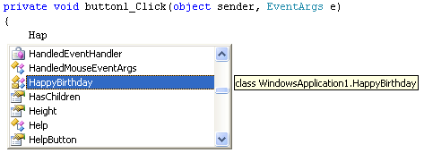
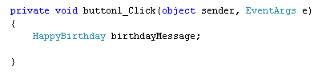
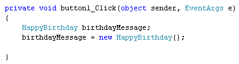
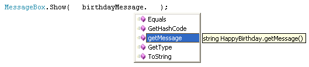

Create Objects from your C# Classes
<< Part of an ongoing lesson - first part is here >>
Now that we have added a Method to our Class, let's turn it into an Object.
Go back to your form, and double click the button you added. This will bring up the code stub for the button.
To create an object from a class, you have to set up a variable of that class type. This involves nothing more than typing its name. So type the "Hap" of HappyBirthday (the name we gave our class). You should see the IntelliSense list appear with you Class on it:

Press the enter key to add the Class name to your code.
After the Class type, you need a name for your variable. This is just like
any other variable name, so you can call it almost anything you like. But type
birthdayMessage as the name of your HappyBirthday class variable,
and your code will look like this:

So this sets up a variable of type HappyBirthday (your class), with the name birthdayMessage.
We haven't yet created the Object, though. All we've done is to tell C# to set up some space in memory to hold the Object.
You create Objects with the new keyword. Like this:
variable_name = new class_name( );
So the name of your variable goes on the left of an equals sign. To the right of the equals sign, you need the new keyword. Type a space and the name of your Class again. This time, you need a pair of round brackets after the class name. End the line with a semicolon, as normal.
Add the following line to your code:
birthdayMessage = new HappyBirthday();
Your code window should then look like this:

If you prefer, you can keep everything on one line. Like this:
HappyBirthday birthdayMessage = new HappyBirthday( );
But bear in mind that you are doing two things at once here: Setting up the variable in memory, and then creating a new Object.
Now that we've created an object, we can go ahead and call the one method that is in our Class.
Now that you have an Object , you can use the dot notation to call your Method:
Object_Name.Method_Name( )
Inside of a MessageBox, type the name of your Object. Then type a full stop. You should then see the IntelliSense list appear with your Method on it:

The reason why it's there is because you made your Method public. If you had made it private then the Method wouldn't show up on the list from outside the class.
Add the Method to your code and you should have this:
Run your programme, and click the button on your form. You should see a message appear.
Congratulations - you've created your very first Class! In the next part, you'll
learn how to pass values to your Classes.